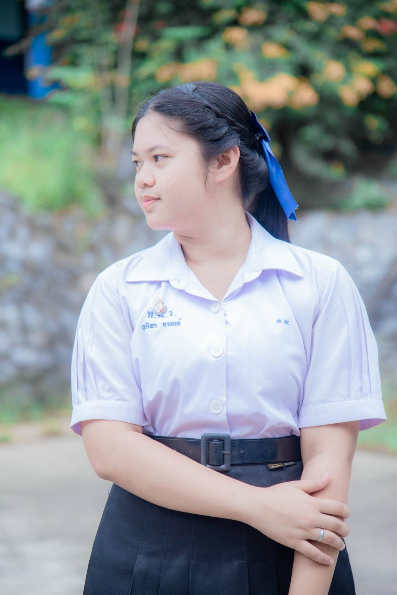
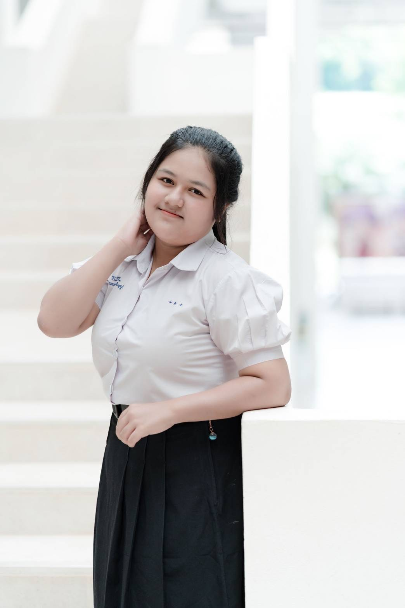

เส้นทางแห่งความฝัน ความตั้งใจ และความภาคภูมิใจ
PERSONAL PROFILE & ACHIEVEMENTS
รวบรวมประวัติส่วนตัว ประวัติการศึกษา กิจกรรม และผลงาน
เพื่อแสดงถึงความมุ่งมั่นและความพร้อมในการก้าวสู่อนาคต

ระดับชั้น: มัธยมศึกษาปีที่ 6
เกรดเฉลี่ย 4 ภาคเรียน: 3.55
มหาวิทยาลัยที่มุ่งศึกษาต่อ: มหาวิทยาลัยราชภัฏนครศรีธรรมราช
คณะ: รัฐศาสตร์
สาขา: รัฐประศาสนศาสตร์
กำลังศึกษาอยู่ระดับชั้นมัธยมศึกษาปีที่ 6
มุ่งศึกษาต่อคณะรัฐศาสตร์ สาขารัฐประศาสนศาสตร์
มหาวิทยาลัยราชภัฏนครศรีธรรมราช
ปลัดอำเภอ

ระดับชั้น: มัธยมศึกษาปีที่ 6
เกรดเฉลี่ย 4 ภาคเรียน: 3.81
มหาวิทยาลัยที่มุ่งศึกษาต่อ: มหาวิทยาลัยรามคำแหง
คณะ: ครุศาสตร์
สาขา: การประถมศึกษา
กำลังศึกษาอยู่ระดับชั้นมัธยมศึกษาปีที่ 6
มุ่งศึกษาต่อคณะครุศาสตร์ สาขาการประถมศึกษา
มหาวิทยาลัยรามคำแหง
รองผู้อำนวยการ